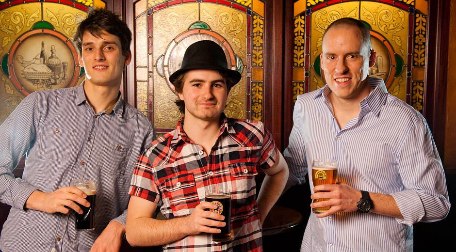

Let's face it, plenty of restaurant websites have the right intentions but fail to deliver. They'll use flash, add music and have no easy way of updating it. As a result, they're hard to navigate (or even access at all) and end up just frustrating potential clients. It is our goal to become the premium provider of affordable and powerful websites for independent restaurant owners.
We're dedicated to helping your revenue grow by focusing on issues that matter. Our websites are conitually analyzed to maxmimize your potential to convert an online user. We provide a lot of basic features such as food menu and event management, but have also completely automated mobile and search engine optimization. Our unique mix of skills and knowledge along with the constant desire for improvement gives us a real advantage. Whilst there's no minimum term or setup fee, we still view your business as a relationship.

Left to Right - Tom Willmot (Head of Beer Tasting), Joe Hoyle (Sous Chef) & Noel Tock (Head Chef & Founder).
We don’t outsource, if you need support you’ll deal directly with us and all development is done in-house.
Happytables isn't just another hosting tool or place to park your website, we constantly develop our solution to meet the specific needs of independent restaurant owners. You're not paying us for storage, but for a solution that continually adapts to the needs of the community and industry. Here are the activites we perform on a regular basis to improve our offering:
Clients such as yourself are our greatest source of ideas for enhancing our solution.
We track activity across all client websites in order to analyze and improve our solution. By hosting so many restaurants, we have access to a valuable source of industry relevant information.
Web technologies constantly evolve and we actively monitor trends to see how they can be used to your best advantage